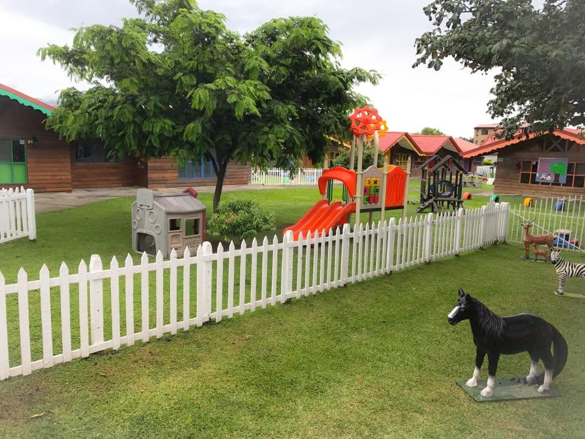

Sala Cuna desde los 3 meses
Somos uno de los pocos centros en Heredia que cuida a bebés desde los 3 meses. Con ratio de 1 maestra por cada 3 bebés.

En KLC tu hijo aprende inglés, juega en la granja y crece seguro
— desde bebé hasta Preparatoria.
Cuatro razones que no encontrarás en otro preescolar de la zona.
Somos uno de los pocos centros en Heredia que cuida a bebés desde los 3 meses. Con ratio de 1 maestra por cada 3 bebés.
El inglés no es una clase extra — es el idioma del aula. Progresivo por nivel, avalado por el MEP.
Los niños cuidan animales, siembran y cosechan. Aprenden con todo el cuerpo, no solo con libros.
Proyecto Green Lunchbox con asesoría nutricional. Y el Servicio de Emergencias Médicas 24 horas, incluido.
Estimulación temprana en inglés. Máximo 12 bebés por aula. Baby Farmers.
Ver Sala CunaCinco niveles bilingües con identidad propia, del primer paso hasta Preparatoria. Red · Blue · Yellow · Green · Purple Farmers.
Ver programasPara que puedas trabajar tranquilo. Salida a las 2 pm, 4 pm o 6 pm.
Ver Day Care[PENDIENTE: testimonio real con nombre, autorización escrita y, de ser posible, foto del padre/madre]
[PENDIENTE: testimonio real con nombre, autorización escrita y, de ser posible, foto del padre/madre]
[PENDIENTE: testimonio real con nombre, autorización escrita y, de ser posible, foto del padre/madre]
La mejor forma de conocer KLC es venir en persona. Te mostramos las instalaciones, te explicamos los programas y respondemos todas tus dudas.
Agenda tu visitaO llámanos al 2293-5693 · Horario: 7:00 am – 6:00 pm